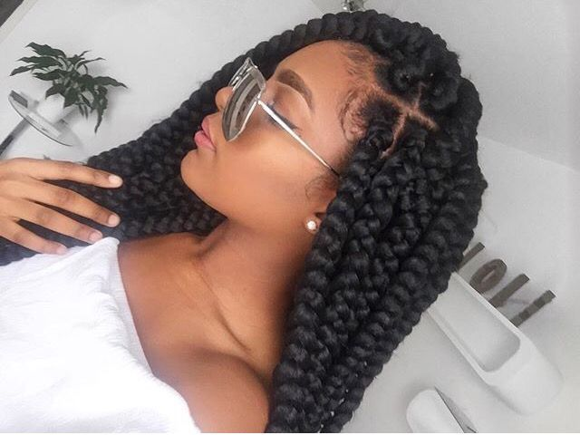

Invest in a color safe, hydrating shampoo. This will prevent the hair from being stripped of its natural oils, while still protecting the color.
Moisturize! Take the time to find a deep conditioner that suits your hair type. Apply the product and let it sit for 30 minutes. You should deep condition at least once a week or as needed.
Layer your hair products by using the LOC(Liquid, Oil, Cream) method. This helps to seal hydration.
Avoid shampoos with sulfates, parabens, and silicones as these tend to contribute to the breaking of the hair follicle.
Wear protective styles to prevent breakage and lock in moisture.
Protective Styles

When doing a twistout, wet your hair. This adds defintion and tightens the curl.
When you have a protective style in, it is critical to cleanse your scalp. Dilute your shampoo with a little water. Using an applicator bottle, apply the product directly on your scalp. This removes buildup and stimulates growth.
Protect you hair while you sleep.To avoid frizz, sleep on a satin pillowcase and/or wrap your hair in a silk/satin bonnet.